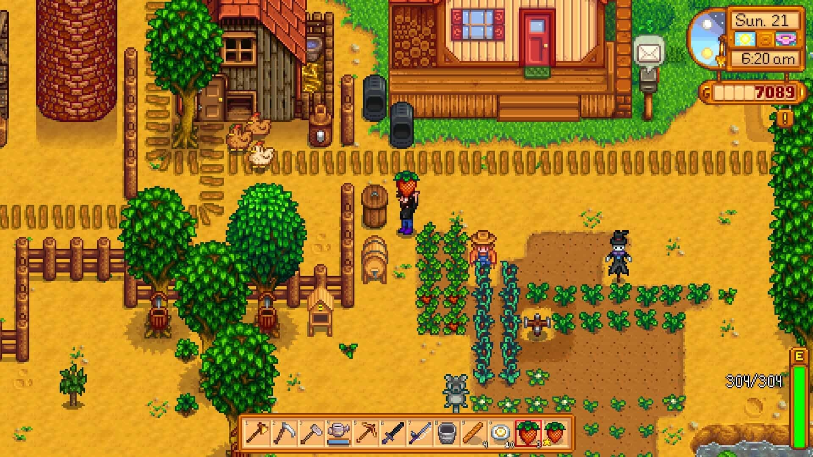
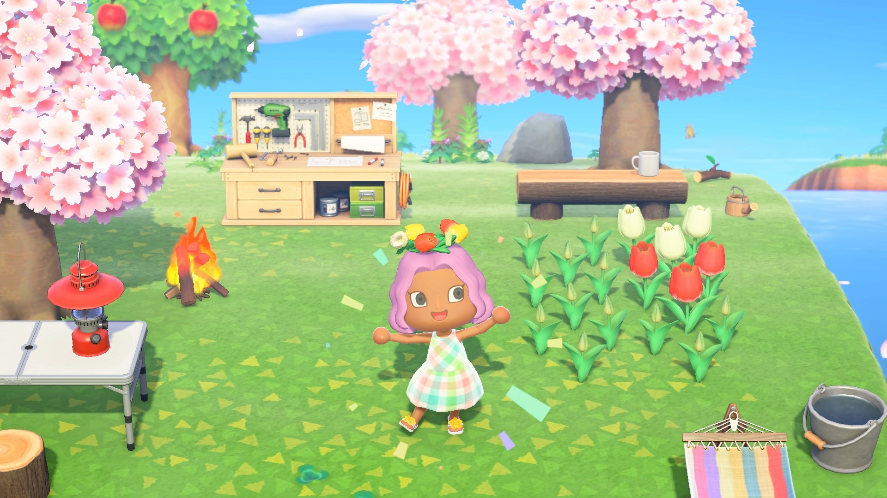
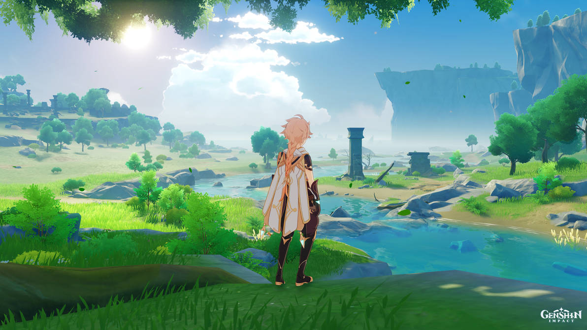

Jogos para Computador e Celular com Comunidades Amigáveis para Meninas
Postado 25 de novembro de 2023
No vasto universo dos jogos, encontrar comunidades acolhedoras para as jogadoras, especialmente as meninas, pode ser um desafio. Infelizmente, o sexismo ainda persiste em algumas comunidades, criando barreiras para a participação plena e positiva. Este artigo destaca essa questão e apresenta uma seleção de jogos para computador e celular que não apenas oferecem experiências envolventes, mas também promovem comunidades inclusivas e amigáveis para meninas.
Jogos para Computador e Celular com Comunidades Amigáveis para Meninas:
1. Stardew Valley:

Plataformas: Computador, Console, Celular
Comunidade: Stardew Valley oferece uma comunidade calorosa e acolhedora. Além de permitir a criação e gerenciamento de fazendas, o jogo valoriza a interação social, incentivando a amizade entre os habitantes da vila.
2. The Sims Series:
Plataformas: Computador, Console
Comunidade: The Sims é conhecido por sua diversidade e inclusão. Os jogadores podem criar personagens diversos, construir casas e participar de narrativas que celebram a pluralidade.
3. Animal Crossing: New Horizons:

Plataformas: Console, Celular
Comunidade: Este jogo se destaca pela sua atmosfera relaxante e amigável. Os jogadores podem criar suas ilhas, interagir com simpáticos habitantes antropomórficos e visitar as ilhas de outros jogadores.
4. Among Us:

Plataformas: Computador, Celular
Comunidade: Among Us tornou-se um fenômeno social, incentivando a colaboração e a comunicação entre os jogadores para identificar impostores. A comunidade é ativa e muitas vezes focada na diversão compartilhada.
5. Genshin Impact:

Plataformas: Computador, Console, Celular
Comunidade: Este RPG de ação e aventura oferece um mundo expansivo e personagens cativantes. Sua comunidade global é diversificada, proporcionando uma experiência rica e inclusiva.
Promovendo Comunidades Positivas:
Ao escolher jogos que incentivam comunidades inclusivas, as meninas podem desfrutar de experiências mais positivas e construtivas. Além disso, é essencial que os desenvolvedores continuem promovendo representatividade e implementando medidas contra comportamentos tóxicos.
Em última análise, os jogos devem ser uma fonte de entretenimento e diversão para todos, independentemente do gênero. Ao apoiar jogos e comunidades que valorizam a inclusão, contribuímos para um ambiente mais positivo e igualitário no universo dos jogos. Escolher jogos que celebram a diversidade não apenas enriquece a experiência de jogo, mas também promove uma cultura mais saudável e inclusiva para todos.
Postagens recentes
Desenvolvimento Profissional Feminino na Tecnologia: Estratégias para Estudo e Equilíbrio
Leia maisComo Escolher a Área Certa para Atuar
Leia maisJogos para Computador e Celular com Comunidades Amigáveis para Meninas
Leia maisQual celular é o ideal para mim?
Leia maisCarros Eletricos: Vale a pena substituir?
Leia maisPor: Brenda Martinez